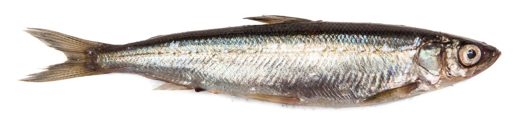

Biologia i rozpoznawanie
Wygląd i rozpoznawanie
Sielawa (Coregonus albula) to niewielka ryba z rodziny łososiowatych, z podrodziny siei, o wydłużonym, bocznie spłaszczonym i wyraźnie smukłym ciele. Osiąga zwykle od kilkunastu do niespełna trzydziestu centymetrów długości, choć w niektórych zbiornikach bywa nieco większa. Grzbiet ma zabarwiony zielonkawo lub stalowoniebiesko, boki i brzuch lśnią srebrzyście, co nadaje jej charakterystyczny, chłodny połysk. Głowa jest mała, pysk zwrócony ku górze, z dolną szczęką lekko wysuniętą — to znak ryby żerującej w toni na drobny plankton i owady. Cechą rozpoznawczą łososiowatych jest niewielka, mięsista płetwa tłuszczowa umieszczona między płetwą grzbietową a ogonową — to nieomylny znak przynależności do tej rodziny. Sielawę odróżnia od pokrewnej siei właśnie górne ustawienie pyska, drobniejsza i delikatniejsza budowa oraz mniejsze rozmiary dorosłych osobników. Łuski są dość duże, cienkie i łatwo odpadające, a linia boczna wyraźna. Oczy ma stosunkowo duże, przystosowane do żerowania przy słabym świetle, w głębszej toni oraz o świcie i zmierzchu. W dłoni sprawia wrażenie ryby wiotkiej, zwiewnej i wyjątkowo delikatnej — dobrze oddaje to jej pelagiczny, wysmakowany tryb życia.
Środowisko i występowanie w Polsce
Sielawa jest gatunkiem zimnolubnym i wymagającym pod względem jakości wody — potrzebuje jezior głębokich, dobrze natlenionych i chłodnych, o czystej, ubogiej w związki odżywcze toni. Największe populacje utrzymują się w głębokich jeziorach Pojezierza Mazurskiego, Pomorskiego i Suwalszczyzny, gdzie latem ryby schodzą w chłodniejsze, natlenione warstwy hypolimnionu. Gatunek jest wyjątkowo wrażliwy na eutrofizację i deficyty tlenu przy dnie; postępujące ocieplenie i zanieczyszczenie wód spowodowały, że w wielu zbiornikach sielawa zanikła lub jest podtrzymywana zarybieniami. Prowadzi typowo pelagiczny, ławicowy tryb życia — całe stada krążą w otwartej toni, przemieszczając się w rytmie dobowej wędrówki planktonu. Jej obecność uważa się za wskaźnik dobrej kondycji i wysokiej klasy czystości jeziora. Warto pamiętać, że w obrębie gatunku wykształciły się w różnych zbiornikach lokalne formy i populacje, różniące się nieco tempem wzrostu, rozmiarami czy terminem tarła — to efekt izolacji i przystosowania do konkretnych warunków danej wody. Dla wędkarza oznacza to, że każde sielawowe jezioro rządzi się własnymi prawami, a wiedza o jednym łowisku nie zawsze przekłada się wprost na inne. Rozmieszczenie ryb w toni zmienia się przy tym w rytmie doby i pory roku, co czyni sielawę gatunkiem wymagającym rozpoznania i cierpliwej obserwacji łowiska.
Biologia i tarło
Sielawa jest rybą stosunkowo krótko żyjącą i szybko dojrzewającą — płciowo dojrzewa najczęściej w drugim lub trzecim roku życia. Kluczową cechą gatunku jest tarło jesienne, przypadające zwykle na listopad i grudzień, gdy temperatura wody wyraźnie spada. Wtedy ławice gromadzą się nad twardym, piaszczysto-żwirowym dnem, często na płyciznach i podwodnych rewach, gdzie samice składają liczną, drobną ikrę bez opieki rodzicielskiej. Ikra rozwija się powoli przez całą zimę pod lodem, a larwy wylęgają się dopiero wczesną wiosną, gdy woda zaczyna się ogrzewać. Ten chłodnowodny cykl rozrodczy tłumaczy, dlaczego okres ochronny sielawy przypada na jesień. Naturalny rozród bywa niestabilny i silnie zależny od warunków — surowości zimy, przejrzystości wody czy dostępności odpowiedniego dna tarłowego. Sukces jednego rocznika potrafi być znakomity, a kolejnego niemal zerowy, co przekłada się na wyraźne wahania liczebności populacji z roku na rok. Dlatego gospodarka rybacka na wielu jeziorach opiera się na sztucznym pozyskiwaniu i inkubacji ikry w wylęgarniach oraz systematycznym zarybianiu wylęgiem i podchowanym narybkiem. Taka ingerencja pozwala utrzymać stada tam, gdzie samo tarło nie wystarcza do odtworzenia zasobów. Płodność samic jest wysoka, ale drobna ikra pozostaje przez całą zimę narażona na zamulenie, wyjadanie i niekorzystne warunki tlenowe.
Żerowanie i tryb życia w sezonach
Sielawa to przede wszystkim planktonożerca — podstawą jej diety są drobne skorupiaki planktonowe, larwy owadów i zooplankton, który filtruje z toni podczas nieustannych wędrówek ławicy. Charakterystyczne są dobowe migracje pionowe: za dnia ryby przebywają głębiej, a o zmierzchu i świcie podnoszą się ku powierzchni, podążając za skupiskami planktonu. Latem, gdy górne warstwy jeziora się nagrzewają, sielawa trzyma się chłodnej, natlenionej toni na granicy termokliny, co utrudnia jej lokalizację. Jesienią, wraz z wychłodzeniem i wymieszaniem wody, ławice rozpraszają się szerzej, a przed tarłem koncentrują nad odpowiednim dnem. Zimą, pod pokrywą lodową, sielawa pozostaje aktywna i chętnie żeruje — to właśnie okres podlodowy jest dla wielu wędkarzy najlepszym czasem na jej połów na drobne, migoczące przynęty. Sielawa żeruje przez większość doby, jednak najwyraźniejsze wzmożenie aktywności obserwuje się o brzasku i po zmroku, gdy plankton unosi się ku górze, a stada podążają za nim w płytsze warstwy. Ta ścisła zależność od pokarmu w toni sprawia, że sielawa niemal nie interesuje się dnem — całe jej życie toczy się w otwartej wodzie. Dla łowiącego oznacza to jedno: skuteczność zależy przede wszystkim od trafienia w piętro, na którym akurat przebywa i żeruje ławica, a nie od miejsca na mapie dna.
Przepisy, metody i taktyka
Przepisy krajowe i zasady lokalne
Przepisy krajowe: Wody śródlądowe: wymiar 18 cm; okres ochronny 15 października–31 grudnia. Źródło: Dz.U. 2023 poz. 1373, § 6–7
Granica okresu ochronnego: jeżeli pierwszy lub ostatni dzień okresu przypada w dzień ustawowo wolny od pracy, okres skraca się o ten dzień (§ 7 ust. 2); wyjątkiem jest całoroczna ochrona jesiotra.
Przed połowem: sprawdź aktualny regulamin i zezwolenie dla konkretnej wody. Wymiar, okres, limit lub zakaz lokalny może być ostrzejszy; brak wartości krajowej nie oznacza zgody na zabranie ryby.
Metody i przynęty
Wędkarski połów sielawy opiera się na miniaturowych przynętach imitujących drobny pokarm z toni. Klasyczną i najskuteczniejszą metodą jest tak zwana szarpaka, czyli zestaw kilku drobnych mormyszek lub błyszczyków uzbrojonych na cienkiej żyłce, prowadzony pionowo w słupie wody. Stosuje się maleńkie, migoczące świecidełka, mormyszki w kolorach srebra, złota, czerwieni i fluo, często doczepiane po kilka na krótkich przyponach jednej za drugą. Latem z łodzi sprawdza się połów w pionie nad głębią oraz metody trollingowe z drobnymi zestawami, a coraz popularniejsze jest delikatne wędkowanie spinningowo-pelagiczne. Zdecydowanie najbardziej wyczekiwaną porą jest jednak sezon podlodowy, gdy przez otwór w lodzie opuszcza się zestaw mormyszek i „gra" nim, wabiąc krążące ławice. Klucz to lekkość zestawu, cienki włos i wyczucie subtelnego brania. Wędzisko dobiera się miękkie i czułe, o wrażliwej szczytówce, która zasygnalizuje nawet najdelikatniejsze przytrzymanie przynęty. Ważne jest też odpowiednie obciążenie zestawu, pozwalające szybko opuścić go na właściwą głębokość i utrzymać kontakt z mormyszkami mimo dryfu łodzi czy prądu wody. Kolor i wielkość świecidełek warto zmieniać w trakcie łowienia, testując, na co danego dnia reaguje ławica — bywa, że o powodzeniu decyduje drobna korekta odcienia lub tempa „gry". To wędkarstwo precyzyjne i finezyjne, bliższe łowieniu na muchę niż siłowemu spinningowaniu drapieżników.
Taktyka łowienia
Skuteczne łowienie sielawy to przede wszystkim odnalezienie ławicy w rozległej toni — dlatego echosonda staje się narzędziem niemal niezbędnym, zwłaszcza latem, gdy ryby trzymają się określonej warstwy przy termoklinie. Po zlokalizowaniu stada należy precyzyjnie ustawić głębokość prowadzenia zestawu i utrzymać ją, bo sielawa rzadko odchodzi od swojego piętra. Branie bywa niezwykle delikatne, ledwie wyczuwalne jako lekkie przytrzymanie lub „odbicie" szczytówki, więc kontakt z przynętą musi być stały, a zacięcie krótkie i miękkie — ryba ma delikatny pysk, z którego łatwo wypada haczyk. Zimą pod lodem szuka się aktywnie, wiercąc kolejne otwory i sprawdzając różne głębokości, aż trafi się na przechodzącą ławicę. Cierpliwość, mobilność i lekki, dobrze wyważony zestaw to fundament sielawowej taktyki na każdej wodzie. Warto obserwować zachowanie innych wędkarzy i ruch ławic na echosondzie, bo stada bywają ruchome i potrafią w krótkim czasie zmienić rejon czy głębokość. Gdy branie ustaje, zwykle nie oznacza to końca żerowania, lecz to, że ryby przesunęły się w bok lub w pionie — wtedy najlepszym rozwiązaniem jest zmiana miejsca albo głębokości prowadzenia, a nie bierne czekanie. Konsekwencja w utrzymaniu właściwego piętra oraz gotowość do szybkiej reakcji na sygnały z toni to cechy, które odróżniają przypadkowe pojedyncze sztuki od udanego, obfitego połowu sielawy.
Wartość kulinarna
Sielawa uchodzi za jedną z najsmaczniejszych ryb polskich jezior i jest prawdziwym rarytasem kuchni regionalnej, zwłaszcza na Mazurach i Suwalszczyźnie. Jej białe, delikatne i lekko tłuste mięso ma subtelny, wyrazisty smak i niewiele ości, co czyni je wdzięcznym w obróbce. Najbardziej cenione są sielawy wędzone — złociste, kruche, o intensywnym aromacie dymu, tradycyjnie podawane jako lokalny przysmak. Doskonale sprawdza się także smażona na maśle, po uprzednim delikatnym obtoczeniu w mące, oraz marynowana. Ze względu na niewielkie rozmiary przyrządza się ją zwykle w całości, po oczyszczeniu. Świeżość jest tu kluczowa — sielawa jako ryba tłustawa szybko traci walory, dlatego najlepiej zająć się nią zaraz po połowie, schłodzić i możliwie prędko przetworzyć lub uwędzić. Świeżo złowiona i dobrze przygotowana sielawa jest przysmakiem, po który sięgają zarówno domowi kucharze, jak i regionalne wędzarnie oraz restauracje serwujące kuchnię pojezierza. To ryba, która najlepiej smakuje w prostych, nieprzekombinowanych daniach, gdzie jej naturalny walor nie ginie pod nadmiarem przypraw — wystarczy sól, odrobina masła i dobry dym. Dla wielu wędkarzy właśnie perspektywa świeżo uwędzonej, pachnącej sielawy jest najsilniejszą motywacją, by wybrać się nad chłodne, głębokie jezioro.
Ciekawostki
Sielawa bywa nazywana „srebrem jezior" i przez pokolenia stanowiła ważny filar rybactwa jeziorowego północnej Polski — jej połowy sieciowe miały niegdyś duże znaczenie gospodarcze. Ciekawe jest jej pokrewieństwo z siecią oraz z rodziną łososiowatych, o czym świadczy niepozorna płetwa tłuszczowa. Gatunek uchodzi za żywy wskaźnik czystości wód: tam, gdzie sielawa dobrze się miewa, jezioro jest głębokie, chłodne i dobrze natlenione. Ciekawostką jest też jej odwrócony względem większości ryb cykl — tarło odbywa jesienią i zimą, a nie wiosną. Wrażliwość na ocieplenie klimatu sprawia, że sielawa staje się gatunkiem coraz bardziej narażonym, a jej utrzymanie w wielu jeziorach zależy od świadomej gospodarki rybackiej, zarybień i ochrony jakości wody przed eutrofizacją.
FAQ — najczęstsze pytania
Kiedy najlepiej bierze sielawa?
Najbardziej wyczekiwaną porą jest sezon podlodowy — zimą, pod pokrywą lodową, sielawa pozostaje aktywna i chętnie reaguje na drobne mormyszki, a jej ławice łatwiej namierzyć na stałych piętrach. Poza zimą dobre efekty daje połów o świcie i zmierzchu, gdy ryby podnoszą się ku powierzchni za wędrującym planktonem. Latem trzeba szukać ich głębiej, przy termoklinie, korzystając z echosondy. Trzeba jednak pamiętać, że jesienią przypada okres ochronny związany z tarłem, więc kalendarz połowu zawsze należy zestawić z aktualnym regulaminem łowiska.
Na co łowi się sielawę?
Podstawą są miniaturowe przynęty imitujące drobny pokarm z toni: maleńkie mormyszki, błyszczyki i świecidełka w kolorach srebra, złota, czerwieni oraz fluo. Najskuteczniejszym zestawem jest szarpaka — kilka drobnych mormyszek uzbrojonych jedna za drugą na cienkiej żyłce, prowadzonych pionowo w słupie wody i delikatnie „grających". Kluczowa jest lekkość całego zestawu, cienki włos i wyczucie subtelnego brania. Sielawa jako planktonożerca nie atakuje dużych przynęt, dlatego stawia się na drobiznę i migotliwą prezentację, a nie na rozmiar czy zapach.
Czy sielawę można łowić wszędzie na zwykłe zezwolenie?
Nie zawsze. W bardzo wielu jeziorach sielawa objęta jest odrębnymi zasadami i osobnymi licencjami jeziorowymi, a jej połów bywa ograniczony co do metody, liczby wędek czy limitu. Dostęp, dozwolony tryb i terminy ustala gospodarz wody oraz właściwy okręg PZW, dlatego zakres „standardowego" zezwolenia może nie obejmować tego gatunku. Przed wyjazdem koniecznie sprawdź warunki wykupionego zezwolenia, regulamin okręgu oraz komunikaty na pzw.org.pl. To gatunek, przy którym warto zachować zasadę ograniczonego zaufania do reguł ogólnych.
Dlaczego sielawa jest tak wrażliwa i coraz rzadsza?
Sielawa jest gatunkiem zimnolubnym, wymagającym głębokich, chłodnych i dobrze natlenionych jezior o czystej wodzie. Postępująca eutrofizacja, zanieczyszczenia i ocieplenie klimatu powodują latnie niedobory tlenu w głębszych warstwach, gdzie ryba szuka schronienia przed ciepłem — a to bezpośrednio uderza w jej przeżywalność. Dodatkowo naturalny rozród bywa niestabilny. Dlatego w wielu zbiornikach populacja utrzymywana jest sztucznie, dzięki pozyskiwaniu i inkubacji ikry oraz zarybieniom. Obecność zdrowej populacji sielawy uznaje się za wskaźnik wysokiej klasy czystości i dobrej kondycji jeziora.
Źródła i weryfikacja
Materiał ma charakter przeglądowy i edukacyjny. Wymiary, okresy ochronne i limity podano orientacyjnie; sielawa w wielu wodach objęta jest odrębnymi zasadami i licencjami jeziorowymi — przed połowem zweryfikuj aktualne zezwolenie, regulamin właściwego okręgu PZW oraz komunikaty na pzw.org.pl.
Tożsamość biologiczna i źródła
Nazwa łacińska: Coregonus albula. Grupa atlasu: łososiowate i inne. Alias: vendace.
Źródła: FishBase: Coregonus albulaGBIF: Coregonus albulaIUCN Red List: Coregonus albula. Dostęp: 2026-07-17. Zakres: tożsamość taksonomiczna i nazewnictwo oraz, gdy wskazano, ocena ochrony; bez potwierdzenia lokalnego występowania, stanu łowiska ani zasad połowu.
Jak odróżnić: Sieja i Sielawa
| Cecha | Sieja | Sielawa |
|---|---|---|
| Rozmiar według FishBase | Maksymalna opublikowana długość: 130 cm. | Maksymalna opublikowana długość: 48 cm; długość typowa: 20 cm. |
| Tryb życia i pokarm | Bytuje m.in. w głębokich jeziorach; zjada bezkręgowce denne i małe ryby. | Tworzy pelagiczne ławice w głębszych jeziorach; zjada planktonowe skorupiaki. |
Źródła cech: FishBase: Coregonus maraena · FishBase: Coregonus albula. Dostęp: 2026-07-17.
Granica oznaczenia: Rozmiar i środowisko nie wystarczają do oznaczenia; siejowate tworzą zmienne populacje i mogą się krzyżować. Liczenie promieni lub łusek wymaga ostrego obrazu i praktyki; cechy barwy i proporcji zależą od wieku, płci, populacji i ubarwienia godowego.